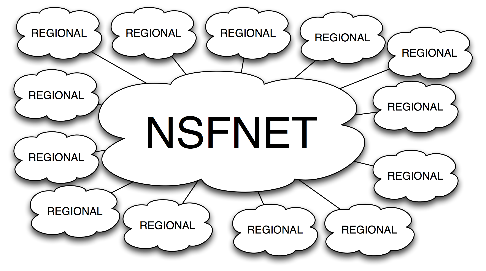
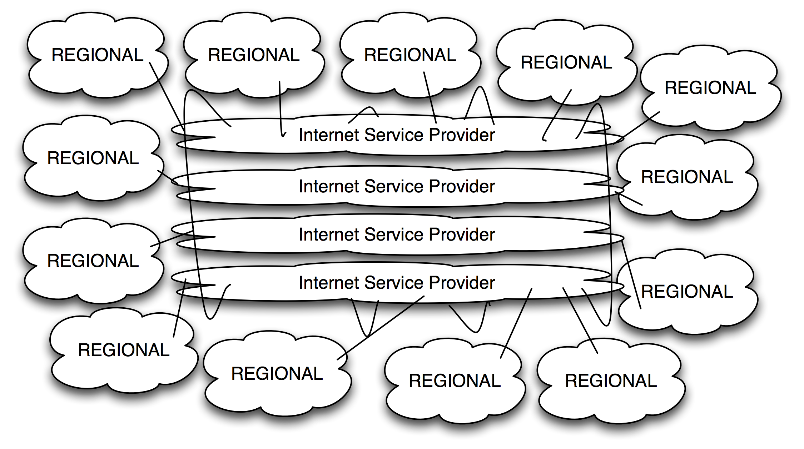
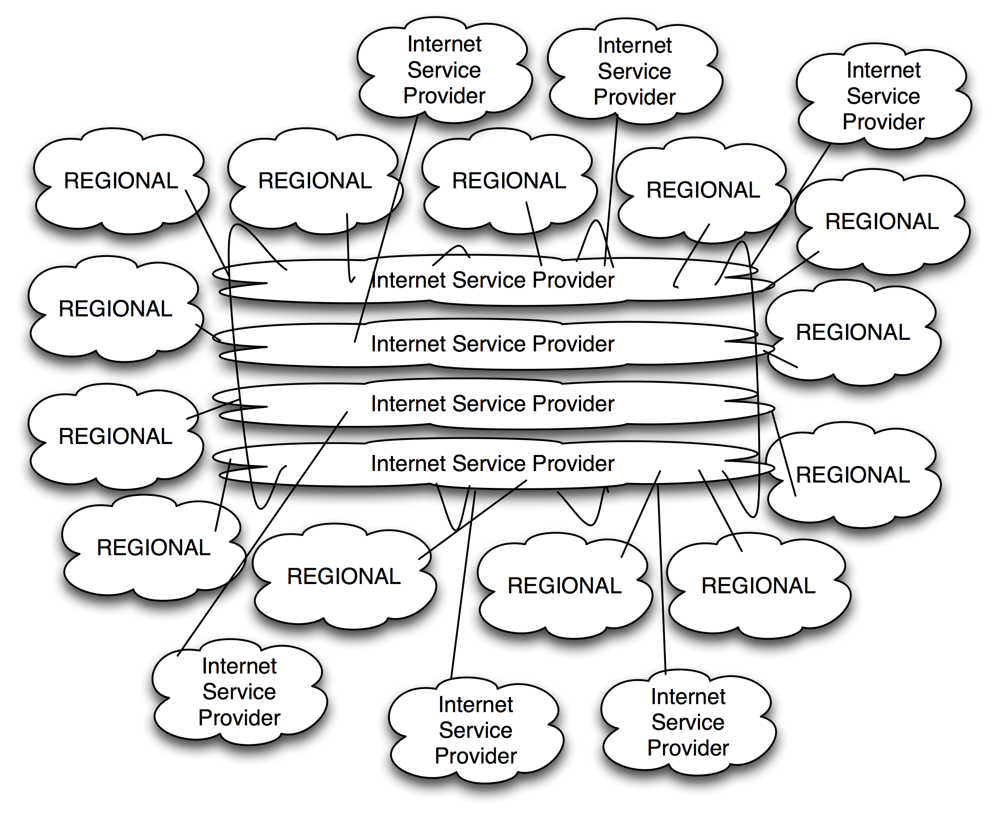
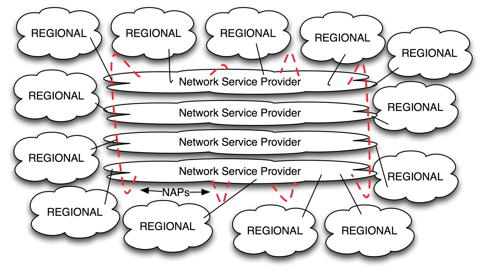

Chapter 8 - The 20th Century Internet Peering Ecosystem
In this chapter we travel back in time to briefly examine the origin of Internet Peering and the transition to the commercial Internet.
The First Peering
Lyman Chapin traced the first peering session back to the early 1980s when two distinct government-funded networks wished to interconnect but nontechnical issues presented obstacles. The Advanced Research Project Agency Network (ARPAnet) and the Computer Science Network (CSNet) were operated by different organizations that had their own administrative structure and policies for who could connect to their network. It was easy to connect to organizations like you but difficult to connect different organizations:
“This disconnect persisted as both sides assumed that any agreement to exchange traffic would necessarily involve the settlement of administrative, financial, contractual, and a host of other issues, the bureaucratic complexity of which daunted even the most fervent advocates of interconnection – until the CSNet managers came up with the idea that we now call “peering,” or interconnection without explicit accounting or settlement.”
[Source: http://www.interisle.net/sub/ISP Interconnection.pdf ]
Peering was invented as an “interconnection without explicit contracts.” The motivation was to interconnect using a model without administrative complexity to interconnect networks as simply as possible.
Internet Peering can also be described as grudging interdependence. Inherent in the model is mutual self-interest balanced with an underlying tension of mistrust. Both networks are operated by two autonomous organizations, so neither knows what the other is doing. The networks mutually benefit from access to each other’s networks using protocols that communicate only the reachability information necessary to provide connectivity. Internet Peering from the earliest days accomplishes interconnection as an arms-length distance, no-contract relationship.
NSFNET-Era Internet Peering, 1987-1994
The National Science Foundation (NSF) created the NSFNET backbone network to interconnect the NSF-funded regional networks across the U.S., allowing researchers at NSF-funded institutes to share data and network resources. Merit Network was awarded the contract to deploy and operate the NSFNET backbone. I worked for Merit during this period and was fortunate enough to get to work on the NSFNET.
The original 13 regional networks connected directly to the NSFNET core backbone as shown in Figure 8-1. The network was later expanded to connect 17 regional networks, with a couple of additional spur attachments added in Europe and Asia. These additional network interconnections were added only when the U.S. government-funded NSF authorized and paid for incremental connections to the NSFNET. Much like a planned economy, the funding agency (NSF) determined which networks were allowed to connect to the backbone – and under what terms.

Figure 8-1. The NSFNET as the core of the Internet (1987-1994 era)
As part of the NSFNET project, Merit Network pulled the Internet operations community together with periodic “Regional Techs Meetings.” These meetings provided a two-way dialog. We shared our NSFNET operations reports and the regional network representatives shared what they were seeing from their vantage point. The community was open to anyone, and we all shared information freely.
NSFNET Transition Ecosystem, 1992-1996
Around 1992 the NSF determined that the operation of the core of the Internet could and should be operated by the private sector. The NSF worked with the Internet community to craft a NSFNET Transition Plan, an evolutionary approach to migrate from the government-funded backbone model to a private sector backbone composed of a set of competing commercial backbones. This way, the regional networks could then choose from these providers in a competitive bidding process.
This peering ecosystem consisted of three types of operators that collectively replaced the NSFNET Internet core.
- Network Service Providers (NSPs) replaced the NSFNET backbone.
- Network Access Points (NAPs) carried traffic between the NSPs at specific places across the country.
- The Routing Arbiter (RA) collected and propagated routing information at the NAPs.
The Routing Arbiter operated a routing database for the community, much like Merit had for the NSFNET backbone. The RA also operated route servers to ensure reachability information would be propagated between and across peers at the NAPs.
With this model, regional networks were empowered to use their NSF funds to purchase access to the Internet from an NSP that interconnected its networks at three of the four “priority NAPs.”
The Early Commercial Internet Model
The NSF awarded the designation of “priority NAP” to Sprint, PacBell, AADS, and eventually MAE-East. Merit Network won the Routing Arbiter contract, and a handful of NSPs (internetMCI, SprintLink, etc.) were selected by the regional networks for their Internet connectivity.
The transition from the NSFNET to the commercial model started around 1994, and it took longer than anyone anticipated. For the cautious (and cheap), it was more comfortable to delay the transition and stay on the NSFNET as long as possible. By mid-1995 though, all regional networks had migrated to the commercial Internet (Figure 8-2).

Figure 8-2. The post-NSFNET model Internet core (1996-2000)
The Regional Techs Meetings were renamed the North American Network Operators Group (NANOG), and Mark Knopper and Elise Gerich developed a charter. Part of my role was to develop a business plan to make the NANOG meetings self-sustaining (not requiring any NSF funds) and reoriented to serve the commercial Internet. I developed a business plan and created the role of NANOG “chair,” coordinating a team to manage the meeting logistics and agenda (speakers and topics) and introduce the speakers at the event, etc. I wasn’t sure if anyone would come since there was a registration fee ($175), but sure enough they did and NANOG grew. I chaired the NANOG meetings from 1995 to 1998.
Post-NSFNET Internet in the Growing-Pains Era, 1997-1998
It was during this time that I first noticed that it was much more difficult to find speakers who would agree to speak at NANOG meetings. No speakers would share that the commercial Internet had problems during this transition – and certainly not with the part that they managed. My old regional techs friends who went to work for these commercial companies apologized but shared that their company had business interests here, and that anything bad might be used against them in the marketplace. They instead brought marketing messages that they were supposed to communicate, and any other message would dilute the important marketing messages.
The context of the commercial Internet put at odds the community desire to understand this new, evolving commercial Internet and the corporate messaging interests. This conflict continues today. It is very difficult to get operators to speak about operations issues, lessons learned, or cooperative solutions.
New interconnections went from being regular announcements at the Regional Techs Meeting to being a private matter between two parties. Commercial ISPs were not interested in letting anyone know who attached and at what capacity. Sharing this information would make it easier for competitors to gauge them and perhaps “cherry pick” the largest customers. All interconnections activities became proprietary – not to be discussed on stage. At the same time, peering was certainly a heated topic discussed with vigor in between formal talks and during socials.
By 1997, the commercial Internet was growing exponentially, chaotically, and organically (Figure 8-3).

Figure 8-3. The core of the Internet grows organically.
The NAPs became a problem. The fact that the NAPs were operated by competitors (Sprint, PacBell, AADS, MFS/WorldCom) was a powerful motivator for the NSPs to move out of the NAPs. Further, the NAPs had some scaling issues – some of them suffered from serious packet loss (Figure 8-4). Finally, the largest ISPs wanted to peer only with the other large ISPs and had little interest in peering for free with the masses of ISPs that populated the NAPs.
For these reasons, many of the larger backbones migrated their interconnections from the NAPs to private point-to-point circuits in multiple geographies across the U.S. The commercial model included a separate interconnect regime for the large backbone ISPs that peered with each other, and the masses of smaller ISPs that peered openly and publicly. The significance of the notion of NSF-blessed “NSPs and NAPs” went away as the NSF regional networks became an increasingly insignificant part of the Internet landscape.
The Internet continued to grow exponentially. More Internet Service Providers entered the market and grew as resellers of bandwidth from these larger ISPs at the “core” of the Internet. Around this time, large-scale content companies like Yahoo! had enough traffic to dwarf the traffic loads seen during the NSFNET days.

Figure 8-4. The post-NSFNET commercial Internet model suffers growing pains.
Carrier-Neutral IXPs Replace NAPs
In early 1999, I spent a lot of time with the Tier 1 ISPs trying to understand why they pulled out of the NAPs, what pain points they faced with the point-to-point model, and under what circumstance IXPs would make sense.
What I learned was that point-to-point circuits were being delivered 18 months late! Internet traffic at the time was doubling every year, and upgrades were planned and ordered well in advance. Still, the local telephone companies could not deliver the needed capacity on a timely basis, presenting a significant problem.
To accommodate the delay in interconnect bandwidth, the largest ISPs had to take great pains to route traffic to avoid congesting their interconnect circuits.
The other issue with circuits was the cost. The point-to-point circuits were very expensive, and they scaled linearly.
In my discussions with people from these ISPs, I discovered that they all experienced the same pain points. In a white paper called “Interconnection Strategies for ISPs,” I documented how Private Peering at an Internet exchange was more economical than point-to-point circuits if these large ISPs could interconnect with at least five others. Further, these interconnects could be run in less than 24 hours. As long as five of them agreed to install, the cost to each would be less than they paid for point-to-point circuits. The Tier 1 ISPs agreed with my analysis and moved into peering at carrier-neutral IXPs across the U.S. Carrier-neutral IXPs thus became the dominant model for peering in the U.S.
Summary
In the 20th century the Internet went through several significant transitions. The Internet model evolved from the government-funded NSFNET to the transitional commercial model, and then from peering at carrier NAPs to peering at carrier-neutral exchange points.
We will next examine more closely the next stage of the transition of the modern Internet – the morphing of the U.S.-centric Internet by organic growth into the Global Internet Peering Ecosystem.
Peering Workshop Practice Questions
Here are a few practice questions from the Internet Peering Workshop:
1. Attachment information was shared openly in the NSFNET days. Why might network attachments be considered proprietary information in the commercial Internet?
2. If the NSPs peer openly with everyone, does that remove their value to the market?
3. What motivated the large ISPs to pull out of the NAPs?
- Congestion problems at the NAPs
- NAPS were run by competitors
- The NSF carried little weight in the commercial Internet
- all of the above
Answers to these questions are in the answer key in the back of the book.